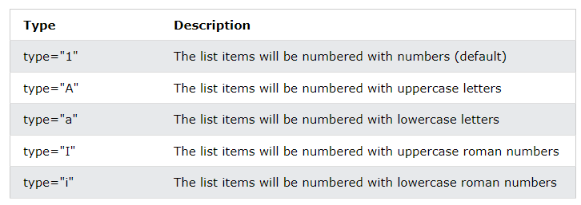

-
Mit kell alapból tudni a listákról?
-
Mit kell alapból tudni a rendezetlen listákról - ul?
-
ul-unordered list (rendezetlen lista, pontozott
lista)
li-list item (lista elem)
-
A list elemek bármilyen más HTML-elemet
eltárolhatnak.
-
A lista elem jelölő alapból négy érték lehet:
-
Mit kell alapból tudni a rendezett listákról - ol?
-
ol-ordered list (rendezetlen lista)
li-list item (lista elem)
-
A list elemek bármilyen más HTML-elemet
eltárolhatnak.
-
A kezdőérték a start-attribútummal állítható be.
-
A lista elem jelölő alapból öt érték lehet. A
beállításhoz a type-attribútumot használjuk:

-
Mit kell alapból tudni a leíró listákról - dl?
-
dl-description list (leíró lista)
dt-description term (leírandó kifejezés)
dd-describe term (kifejezés leírása)